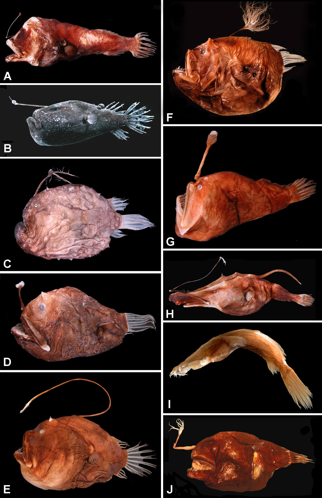

Anglerfish have a fleshy growth from the fish's head (the esca or illicium) acts as a lure. Some anglerfish are also notable for extreme sexual dimorphism and sexual symbiosis of the small male with the much larger female, seen in the suborder Ceratioidei. In these species, males may be several orders of magnitude smaller than females.
The male ceratioid lives solely to find and mate with a female. They are significantly smaller than a female anglerfish, and may have trouble finding food in the deep sea. Furthermore, growth of the alimentary canals of some males becomes stunted, preventing them from feeding. Some taxa have jaws that are never suitable or effective for prey capture.[21] These features mean the male must quickly find a female anglerfish to prevent death.
